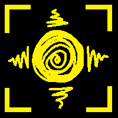
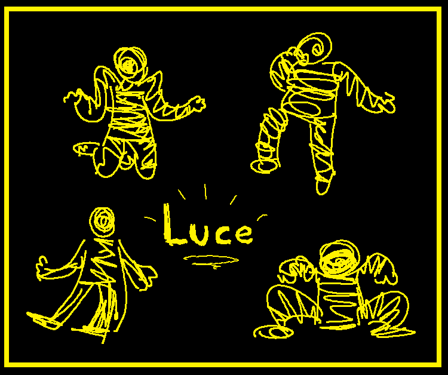
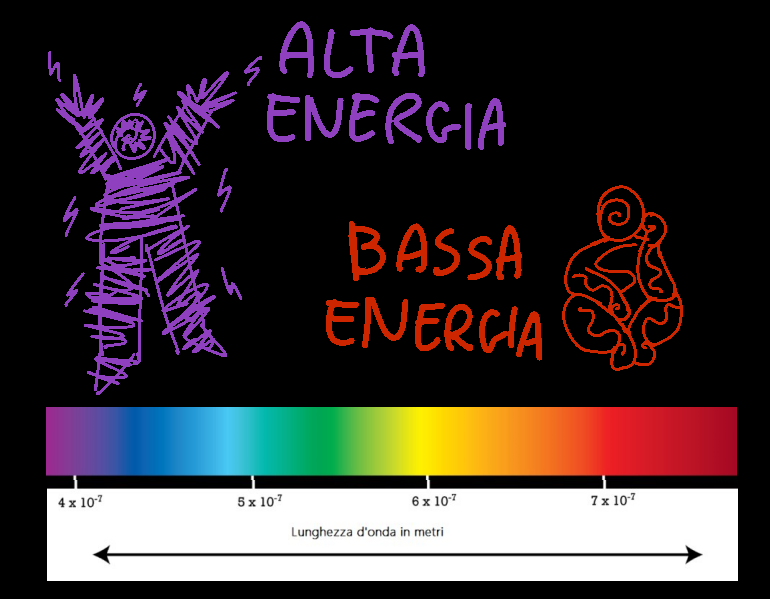
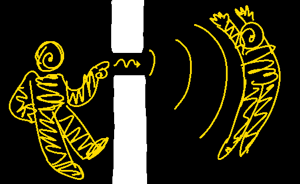

Pagina di esempio
Da Prismapedìa, l'enciclopedia libera
| Luce | |
|---|---|
|
 Cerchio giallo con una spirale dentro e raggi verso fuori, come un sole |
|
| Info | |
Collegamenti |
|
Luce è un esserino fatto di elettricità e magnetismo! Si muove molto velocemente, e può oscillare in tutte le frequenze del visibile. Trasporta energia!
Descrizione
È uno scarabocchio giallo umanoide. Ha la testa rotonda con una spirale dentro, che cambia a seconda dell'umore, e delle spirali a forma di molla dentro ognuno dei 4 arti, che collegano mani e piedi al corpo. Il colore di Luce e la densità delle spirali cambiano in base al livello di energia, proprio come il colore e la frequenza della luce vera.
Galleria



Note
-
↑ Riferimento all'esperimento della doppia fenditura.